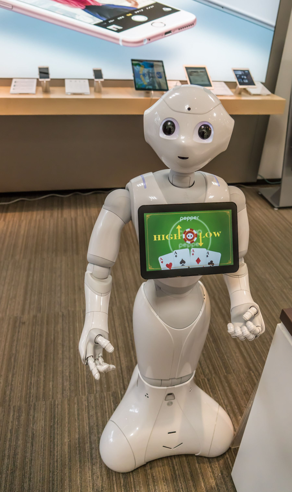
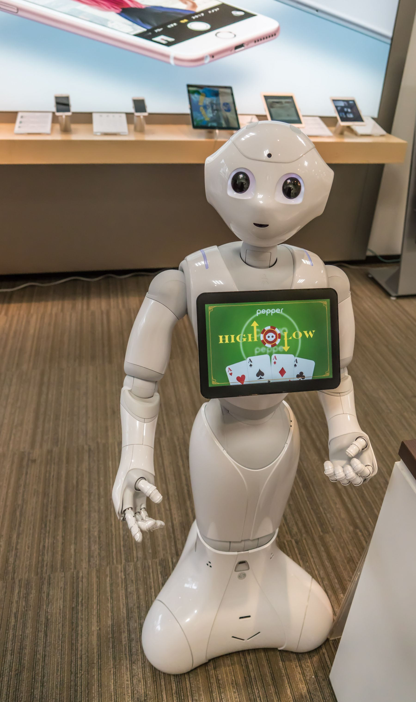

Department of Computer Technology is designed to prepare students with knowledge and skills in programming, software-hardware integration, and entrepreneurship based on technology (technopreneurship). As part of the curriculum, our scholars will be equipped with IT professional certification programs which are accepted internationally. With this unique curriculum, our graduates are prepared to deal with business globalization and the highly competitive global job market.
Degree
Regular Program: Sarjana Teknik (S.T.)
Concentrations
Applied Networking
In this area of concentration, students are prepared to become solution engineers or network engineers who are experts in designing, configuring, maintaining and managing local area networks and wide area networks (internet/intranet). The program offered will be delivered based on the CISCO Networking Academy® as an innovative education initiative that delivers Information and Communication Technology (ICT) skills to improve career and economic opportunities around the world. By completing the program, students are prepared to obtain both Cisco Certified Network Associate (CCNA) and Cisco Certified Network Professional (CCNP). The certification programs are designed for students who intend to have enterprise level networking skills.
Robotics and Automation
This area of concentration prepares students to become robot and automation designers who have competencies in designing, analyzing and programming intelligent robot and automation systems. Within this concentration area, the research atmosphere and skills are developed through projects and joint research with lecturers.
 

Computer Technology Courses:
Adaptive Control System
Advanced Computer Network Design
Advanced Control System
Advanced Routing
Advanced Switching
Algorithm & Programming
Basic Electronics
Calculus
Computer Network Design
Control System
Data Communication and Computer Networks
Digital System
Internetworking
Life Skills
Management of Technology
Microprocessor and Microcontroller
Physics
Robotics
Career Opportunities
Computer Technology graduates are prepared to be able to start a career as a network engineer, network security engineer, network administrator, automation systems engineer, software engineer, PC support engineer, robot engineer, or technopreneur in every area including commercial companies both national and multinational, healthcare companies, telecommunication companies, manufacturing, research and education and government.